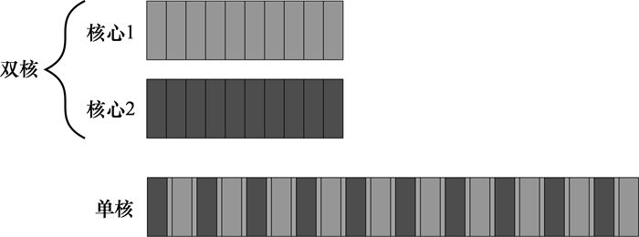
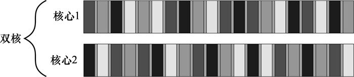
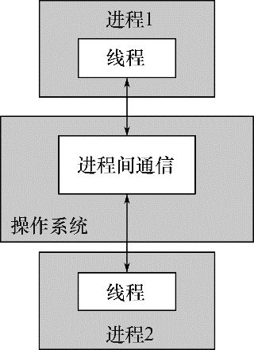
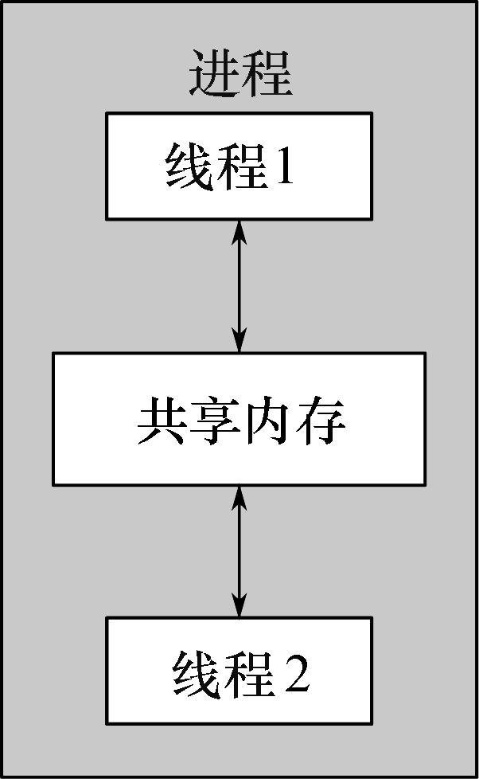
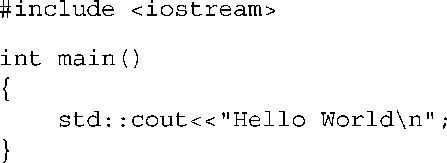
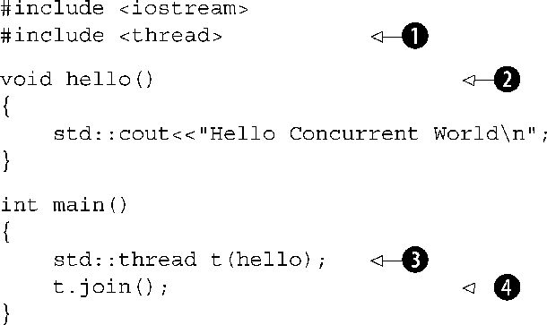

本章主要内容
这是令C++用户振奋的时刻。距1998年初始的C++标准发布13年后，C++标准委员会给予程序语言和它的支持库一次重大的变革。新的C++标准（也被称为C++11或C++0x）于2011年发布并带来了很多的改变，使得C++的应用更加容易并富有成效。
在C++11标准中一个最重要的新特性就是支持多线程程序。这是C++标准第一次在语言中承认多线程应用的存在，并在库中为编写多线程应用程序提供组件。这将使得在不依赖平台相关扩展下编写多线程C++程序成为可能，从而允许以有保证的行为来编写可移植的多线程代码。这也恰逢程序员寻求更多普遍的并发，特别是多线程程序，来提高应用程序的性能。
这本书讲述的就是C++编程中对多线程并发的使用，以及相关的C++语言特性和库工具。我会以解释并发和多线程的含义以及为什么要在应用程序中使用并发开始。在快速全方位地阐述为什么在应用程序中会不使用并发之后，我会对C++中并发支持进行概述，并以一个简单的C++并发实例结束这一章。具有开发多线程应用程序经验的读者可以跳过前面的小节。在随后几章将会涵盖更多广泛的例子，并且更深入地了解库工具。本书最后附有对多线程与并发全部的C++标准库工具的深入参考。
那么，什么是并发（concurrency） 和多线程（multithreading） ？
在最简单和最基本的层面，并发是指两个或更多独立的活动同时发生。并发在生活中随处可见。我们可以一边走路一边说话，也可以两只手同时做不同的动作，还有我们每个人都相互独立地过我们的生活——我在游泳的时候你可以看球赛，等等。
当我们提到计算机术语的“并发”，指的是在单个系统里同时执行多个独立的活动，而不是顺序地或是一个接一个地。这并不是一种新的现象，多任务操作系统通过任务切换允许一台计算机在同一时间运行多个应用程序已司空见惯多年，一些高端的多任务处理服务器实现并发控制的历史更久远。真正有新意的是增加计算机真正并行运行多任务的普遍性，而不只是给人这种错觉。
以前，大多数计算机都有一个处理器，具有单个处理单元或核心，至今许多台式机器仍是这样。这种计算机在某一时刻只可以真正执行一个任务，但它可以每秒切换任务许多次。通过做一点这个任务然后再做一点别的任务，看起来像是任务在并行发生。这就是任务切换（taskswitching） 。我们仍然将这样的系统称为并发（concurrency） ，因为任务切换得太快，以至于无法分辨任务在何时会被暂挂而切换到另一个任务。任务切换给用户和应用程序本身造成了一种并发的假象。由于这只是并发的假象 ，当应用程序执行在单处理器任务切换环境下，与在真正的并发环境下执行相比，其行为还是有着微妙的不同。特别地，对内存模型不正确的假设（参见第5章）在这样的环境中可能不会出现。这将在第10章中作深入讨论。
包含多个处理器的计算机用于服务器和高性能计算任务已有多年，现在基于单个芯片上具有多于一个核心的处理器（多核心处理器）的计算机也成为越来越常见的台式机器。无论它们拥有多个处理器或一个多核处理器（或两者兼具），这些计算机能够真正的并行运行超过一个任务。我们才称之为硬件并发（hardwareconcurrency） 。
图1.1显示了一个计算机处理恰好两个任务时的理想情景，每个任务被分为10个相等大小的块。在一个双核机器（具有两个处理核心）中，每个任务可以在各自的核心执行。在单核机器上做任务切换时，每个任务的块交织进行。但它们也隔开了一位（图中所示灰色分隔条的厚度大于双核机器的分隔条）。为了实现交替进行，该系统每次从一个任务切换到另一个时都得执行一次上下文切换（contextswitch） ，而这是需要时间的。为了执行上下文切换，操作系统必须为当前运行的任务保存CPU的状态和指令指针，算出要切换到哪个任务，并为要切换到的任务重新加载处理器状态。然后CPU可能要将新任务的指令和数据的内存载入到缓存中，这可能会阻止CPU执行任何指令，造成进一步的延迟。

图1.1 并发的两种方式：双核机器的并行执行对比单核机器的任务切换
尽管硬件并发的可用性在多处理器或多核系统上更显著，有些处理器却可以在一个核心上执行多个线程。要考虑的最重要的因素是硬件线程（hardwarethreads） 的数量：即硬件可以真正并发运行多少独立的任务。即便是具有真正硬件并发的系统，也很容易有超过硬件可并行运行的任务要执行，所以在这些情况下任务切换仍将被使用。例如，在一个典型的台式计算机上可能会有几百个的任务在运行，执行后台操作，即使计算机在名义上是空闲的。正是任务切换使得这些后台任务可以运行，并使得你可以同时运行文字处理器、编译器、编辑器和web浏览器（或任何应用的组合）。图1.2显示了四个任务在一台双核机器上的任务切换，仍然是将任务整齐地划分为同等大小块的理想情况。实际上，许多因素造成了分割不均和调度不规则。这些因素中的一部分将涵盖在第8章中，那时我们再来看一看影响并行代码性能的因素。

图1.2 四个任务在两个核心之间的切换
所有的技术、功能和本书所涉及的类都可以使用，无论你的应用程序是在单核处理器还是多核处理器上运行，也不管是任务切换或是真正的硬件并发。但你可以想象，如何在你的应用程序中使用并发很大程度上取决于可用的硬件并发。这将在第8章中涵盖，在第8章我们具体研究C++代码并行设计问题。
想象一下两个程序员一起做一个软件项目。如果你的开发人员在独立的办公室，它们可以各自平静地工作，而不会互相干扰，并且他们各有自己的一套参考手册。然而，沟通起来就不那么直接了；不能转身然后互相交谈，他们必须用电话、电子邮件或走到对方的办公室。同时，你需要掌控两个办公室的开销，还要购买多份参考手册。
现在想象一下把开发人员移到同一间办公室。他们现在可以地相互交谈来讨论应用程序的设计，他们也可以很容易地用纸或白板来绘制图表，辅助阐释设计思路。你现在只有一个办公室要管理，只要一组资源就可以满足。消极的一面是，他们可能会发现难以集中注意力，并且还可能存在资源共享的问题（“参考手册跑哪去了？”）。
组织开发人员的这两种方法代表着并发的两种基本途径。每个开发人员代表一个线程，每个办公室代表一个处理器。第一种途径是有多个单线程的进程，这就类似让每个开发人员在他们自己的办公室，而第二种途径是在单一进程里有多个线程，这就类似在同一个办公室里有两个开发人员。你可以随意进行组合，并且拥有多个进程，其中一些是多线程的，一些是单线程的，但原理是一样的。让我们在一个应用程序中简要地看一看这两种途径。
在一个应用程序中使用并发的第一种方法，是将应用程序分为多个、独立的、单线程的进程，它们运行在同一时刻，就像你可以同时进行网页浏览和文字处理。这些独立的进程可以通过所有常规的进程间通信渠道互相传递信息（信号、套接字、文件、管道等），如图1.3所示。有一个缺点是这种进程之间的通信通常设置复杂，或是速度较慢，或两者兼备，因为操作系统通常在进程间提供了大量的保护，以避免一个进程不小心修改了属于另一个进程的数据。另一个缺点是运行多个进程所需的固有的开销：启动进程需要时间，操作系统必须投入内部资源来管理进程，等等。

图1.3 一对并发运行的进程之间的通信
当然，也并不全是缺点：操作系统在线程间提供的附加保护操作和更高级别的通信机制，意味着可以比线程更容易地编写安全的并发代码。事实上，类似于为Erlang编程语言提供的环境，可使用进程作为重大作用并发的基本构造块。
使用独立的进程实现并发还有一个额外的优势——你可以通过网络连接的不同的机器上运行独立的进程。虽然这增加了通信成本，但在一个精心设计的系统上，它可能是一个提高并行可用行和提高性能的低成本方法。
并发的另一个途径是在单个进程中运行多个线程。线程很像轻量级的进程：每个线程相互独立运行，且每个线程可以运行不同的指令序列。但进程中的所有线程都共享相同的地址空间，并且从所有线程中访问到大部分数据——全局变量仍然是全局的，指针、对象的引用或数据可以在线程之间传递。虽然通常可以在进程之间共享内存，但这难以建立并且通常难以管理，因为同一数据的内存地址在不同的进程中也不尽相同。图1.4显示了一个进程中的两个线程通过共享内存进行通信。

图1.4 同一进程中的一对并发运行的线程之间的通信
共享的地址空间，以及缺少线程间的数据保护，使得使用多线程相关的开销远小于使用多进程，因为操作系统有更少的簿记要做。但是，共享内存的灵活性是有代价的：如果数据要被多个线程访问，那么程序员必须确保当每个线程访问时所看到的数据是一致的。线程间数据共享可能会遇到的问题、所使用的工具以及为了避免问题而要遵循的准则在本书中都有涉及，特别是在第3、4、5和8章中。这些问题并非不能克服，只要在编写代码时适当地注意即可，但这却意味着必须对线程之间的通信作大量的思考。
相比于启动多个单线程进程并在其间进行通信，启动单一进程中的多线程并在其间进行通信的开销更低，这意味着若不考虑共享内存可能会带来的潜在问题，它是包括C++在内的主流语言更青睐的并发途径。此外，C++标准没有为进程间通信提供任何原生支持，所以使用多进程的应用程序将不得不依赖平台相关的API来实现。因此，本书专门关注使用多线程的并发，并且之后提到并发均是假定通过使用多线程来实现的。
明确了什么是并发后，现在让我们来看看为什么要在应用程序中使用并发。
在应用程序中使用并发的原因主要有两个：关注点分离和性能。事实上，我甚至可以说它们差不多是使用并发的唯一原因；当你观察得足够仔细时，一切其他因素都可以归结到这两者之一（或者可能是二者兼有，当然，除了像“我愿意”这样的原因之外）。
在编写软件时，划分关注点总是个好主意。通过将相关的代码放在一起并将无关的代码分开，这种方法可以使你的程序更容易理解和测试，从而减少出错的可能性。你可以使用并发来分隔不同的功能区域，即使在这些不同功能区域的操作需要在同一时刻发生的情况下。如果不显式地使用并发，你要么被迫编写任务切换框架，要么在操作中主动地调用不相关的一段代码。
考虑一类带有用户界面的密集处理型应用程序，例如为台式计算机提供的DVD播放程序。这样一个应用程序基本上具备两套职能：它不仅要从光盘中读取数据，解码图像和声音，并把它们及时输出至视频和音频硬件，从而实现DVD的无错播放；它还要接受来自用户的输入，例如当用户单击暂停或返回菜单甚至退出按键的情况。在单个线程中，应用程序须在回放期间定期检查用户的输入，于是将DVD回放代码和用户界面代码合在一起。通过使用多线程来分隔这些关注点，用户界面代码和DVD回放代码不再需要如此紧密地交织在一起。一个线程可以处理用户界面，另一个处理DVD回放，它们之间会有交互，例如用户点击暂停，但现在这些交互直接与眼前的任务有关。
这会带来响应性的错觉，因为用户界面线程通常可以立即响应用户的请求，即使在请求被传达给工作的线程，响应为简单地显示正忙的光标或请等待的消息的情况。类似地，独立的线程常被用于运行必须在后台连续运行的任务，例如在桌面搜索程序中监视文件系统的变化。以这种方式使用线程一般会使每个线程的逻辑更加简单，因为它们之间的交互可以被限制为清晰可辨的点，而不是到处散播不同任务的逻辑。
在这种情况下，线程的数量与CPU可用内核的数量无关，因为对线程的划分是基于概念上的设计而不是试图增加吞吐量。
多处理器系统已经存在了几十年，但直到最近，他们几乎只能在超级计算机、大型机和大型服务器系统中才能看到。然而芯片制造商越来越倾向于多核芯片的设计，即在单个芯片上集成2、4、16或更多的处理器，从而达到比单核心更好的性能。因此，多核台式计算机，甚至多核嵌入式设备，现在越来越普遍。这些计算机的计算能力的提高不是源自使单一任务运行的更快，而是源自并行运行多个任务。在过去，程序员曾坐等他们的程序随着处理器的更新换代而变得更快，无需他们这边做出任何努力。但是现在，就像Herb Sutter所说的，“免费的午餐结束了 [1] ”。如果软件想要利用日益增长的计算能力，它必须设计为并发运行多个任务 。程序员因此必须留意，而且那些迄今都忽略并发的人们必须注意它并将其加入他们的工具箱中。
有两种方式为了性能使用并发。首先，也是最明显的，是将一个单个任务分成几部分且各自并行运行，从而降低总运行时间，这就是任务并行（taskparallelism） 。虽然这听起来很直观，但它可以是一个相当复杂的过程，因为在各个部分之间可能存在很多的依赖。区别可能是在过程方面——一个线程执行算法的一部分而另一个线程执行算法的另一部分——或是在数据方面——每个线程在不同的数据部分上执行相同的操作。后一种方法被称为数据并行（dataparallelism） 。
容易受这种并行影响的算法常被称为易并行（embarrassinglyparallel） 。抛开你可能会尴尬地面对的很容易并行化的代码这一含义，这是一件好事情。我曾遇到过的关于此算法的别的术语是自然并行（naturallyparallel） 和便利并发（convenientlyconcurrent） 。易并行算法具有良好的可扩展特性——随着可用硬件线程数量的提升，算法的并行性可以随之增加与之匹配。这样的一个算法是谚语“人多力量大”的完美体现。对于非易并行算法的那一部分，你可以将算法划分为一个固定（因而不可扩展）数量的并行任务。在线程之间划分任务的技巧涵盖在第8章中。
使用并发来提升性能的第二种方法是使用可用的并行方式来解决更大的问题。与其同时处理一个文件，不如酌情处理2个或10个或20个。虽然这实际上只是数据并行 的一种应用，通过对多组数据同时执行相同的操作，但还是有不同的重点。处理一个数据块仍然需要同样的时间，但在相同的时间内却可以处理更多的数据。当然，这种方法也存在限制，且并非在所有情况下都是有益的，但是这种方法所带来的吞吐量提升可以让一些新玩意变得可能。例如，如果图片的各部分可以并行处理，就能提高视频处理的分辨率。
知道何时不 使用并发与知道何时要 使用它同等重要。基本上，不使用并发的唯一原因就是在收益比不上成本的时候。使用并发的代码在很多情况下难以理解，因此编写和维护的多线程代码就有直接的脑力成本，同时额外的复杂性也可能导致更多的错误。除非潜在的性能增益足够大或关注点分离得足够清晰，能抵消确保其正确所需的额外的开发时间以及与维护多线程代码相关的额外成本，否则不要使用并发。
同样地，性能增益可能不会如预期的那么大。在启动线程时存在固有的开销，因为操作系统必须分配相关的内核资源和堆栈空间，然后将新线程加入调度器中，所有这一切都要占用时间。如果在线程上运行的任务完成得很快，那么任务实际上占据的时间与启动线程的开销时间相比就显得微不足道，可能会导致应用程序的整体性能还不如通过产生线程直接执行该任务。
此外，线程是有限的资源。如果让太多的线程同时运行，则会消耗操作系统资源，并且使得操作系统整体上运行得更缓慢。不仅如此，运行太多的线程会耗尽进程的可用内存或地址空间，因为每个线程都需要一个独立的堆栈空间。对于一个可用地址空间限制为4GB的扁平架构的32位进程来说，这尤其是个问题。如果每个线程都有一个1MB的堆栈（对于很多系统来说是典型的），那么4096个线程将会用尽所有地址空间，不再为代码、静态数据或者堆数据留有空间。虽然64位（或者更大）的系统不存在这种直接的地址空间限制，它们仍然只具备有限的资源：如果你运行太多的线程，最终会导致问题。尽管线程池（参见第9章）可以用来限制线程的数量，但这并不是灵丹妙药，它们也有自己的问题。
如果客户端/服务器应用程序的服务器端为每一个链接启动一个独立的线程，对于少量的链接是可以正常工作的，但当同样的技术用于需要处理大量链接的高需求服务器时，就会因为启动太多线程而迅速耗尽系统资源。在这种场景下，谨慎地使用线程池可以提供优化的性能（参见第9章）。
最后，运行越多的线程，操作系统就需要做越多的上下文切换。每个上下文切换都需要耗费本可以花在有价值工作上的时间，所以在某些时候，增加一个额外的线程实际上会降低 而不是提高应用程序的整体性能。为此，如果你试图得到系统的最佳性能，考虑可用的硬件并发（或缺乏之）并调整运行线程的数量是必需的。
为了性能优化而使用并发就像所有其他优化策略一样，它拥有极大提高应用程序性能的潜力，但它也可能使代码复杂化，使其更难理解和更容易出错。因此，只有对应用程序中的那些具有显著增益潜力的性能关键部分才值得这样做。当然，如果性能收益的潜力仅次于设计清晰或关注点分离，可能也值得使用多线程设计。
假设你已经决定确实 要在应用程序中使用并发，无论是为了性能、关注点分离，或是因为“多线程星期一”，对于C++程序员来说意味着什么？
通过多线程为并发提供标准化的支持对C++来说是新鲜事物。只有在即将到来的C++11标准中，你才能不依赖平台相关的扩展来编写多线程代码。为了理解新版本C++线程库中众多规则背后的基本原理，了解其历史是很重要的。
1998C++标准版不承认线程的存在，并且各种语言要素的操作效果都以顺序抽象机的形式编写。不仅如此，内存模型也没有被正式定义，所以对于1998 C++标准，你没办法在缺少编译器相关扩展的情况下编写多线程应用程序。
当然，编译器供应商可以自由地向语言添加扩展，并且针对多线程的C API的流行——例如在POSIX C和Microsoft Windows API中的那些——导致很多C++编译器供应商通过各种平台相关的扩展来支持多线程。这种编译器支持普遍地受限于只允许使用该平台相应的C API以及确保该C++运行时库（例如异常处理机制的代码）在多线程存在的情况下运行。尽管极少有编译器供应商提供了一个正式的多线程感知内存模型，但编译器和处理器的实际表现也已经足够好，以至于大量的多线程的C++程序已被编写出来。
由于不满足于使用平台相关的C API来处理多线程，C++程序员曾期望他们的类库提供面向对象的多线程工具。像MFC这样的应用程序框架，以及像Boost和ACE这样的C++通用类库曾积累了多套C++类，封装了下层的平台相关API并提供高级的多线程工具以简化任务。各类库的具体细节，特别是在启动新线程的方面，存在很大差异，但是这些类的总体构造存在很多共通之处。有一个为许多C++类库共有的，同时也是为程序员提供很大便利的特别重要的设计，就是带锁的资源获得即初始化（RAII, ResourceAcquisitionIsInitialization） 的习惯用法，来确保当退出相关作用域的时候互斥元被解锁。
许多情况下，现有的C++编译器所提供的多线程支持，例如Boost和ACE，综合了平台相关API以及平台无关类库的可用性，为编写多线程C++代码提供一个坚实的基础，也因此大约有数百万行C++代码作为多线程应用程序的一部分而被编写出来。但缺乏标准的支持，意味着存在缺少线程感知内存模型从而导致问题的场合，特别是对于那些试图通过使用处理器硬件能力来获取更高性能，或是编写跨平台代码，但是在不同平台之间编译器的实际表现存在差异。
所有这些都随着新的C++11标准的发布而改变了。不仅有了一个全新的线程感知内存模型，C++标准库也被扩展了，包含了用于管理线程（参见第2章）、保护共享数据（参见第3章）、线程间同步操作（参见第4章）以及低级原子操作（参见第5章）的各个类。
新的C++线程库很大程度上基于之前通过使用上文提到的C++类库而积累的经验。特别地，Boost线程库被用作新类库所基于的主要模型，很多类与Boost中的对应者共享命名和结构。在新标准演进的过程中，这是个双向流动，Boost线程库也改变了自己，以便在多个方面匹配C++标准，因此从Boost迁移过来的用户将会发现自己非常适应。
正如本章开篇提到的那样，对并发的支持仅仅是新C++标准的变化之一，此外还存在很多对于编程语言自身的改善，可以使得程序员们的工作更便捷。这些内容虽然不在本书的论述范围之内，但是其中的一些变化对于线程库本身及其使用方式已经形成了直接的冲击。附录A对这些语言特性做了简要的介绍。
C++中对原子操作的直接支持，允许程序员编写具有确定语义的高效代码，而无需平台相关的汇编语言。这对于那些试图编写高效的、可移植代码的程序员们来说是一个真正的福利。不仅有编译器可以搞定平台的具体内容，还可以编写优化器来考虑操作的语义，从而让程序作为一个整体得到更好的优化。
对于C++整体以及包含低级工具的C++类——特别是在新版C++线程库里的那些，参与高性能计算的开发者常常关注的一点就是效率。如果你正寻求极致的性能，那么理解与直接使用底层的低级工具相比，使用高级工具所带来的实现成本，是很重要的。这个成本就是抽象惩罚（abstractionpenalty） 。
C++标准委员会在整体设计C++标准库以及专门设计标准C++线程库的时候，就已经十分注重这一点了。其设计的目标之一就是在提供相同的工具时，通过直接使用低级API就几乎或完全得不到任何好处。因此该类库被设计为在大部分平台上都能高效实现（带有非常低的抽象惩罚）。
C++标准委员会的另一个目标，是确保C++能提供足够的低级工具给那些希望与硬件工作得更紧密的程序员，以获取终极性能。为了达到这个目的，伴随着新的内存模型，出现了一个全面的原子操作库，用于直接控制单个位、字节、线程间同步以及所有变化的可见性。这些原子类型和相应的操作现在可以在很多地方加以使用，而这些地方以前通常被开发者选择下放到平台相关的汇编语言中。使用了新的标准类型和操作的代码因而具有更佳的可移植性，并且更易于维护。
C++标准库也提供了更高级别的抽象和工具，它们使得编写多线程代码更简单和不易出错。有时候运用这些工具确实会带来性能成本，因为必须执行额外的代码。但是这种性能成本并不一定意味着更高的抽象惩罚；总体来看，这种性能成本并不比通过手工编写等效的函数而招致的成本更高，同时编译器可能会很好地内联大部分额外的代码。
在某些情况下，高级工具提供超出特定使用需求的额外功能。在大部分情况下这都不是问题，你没有为你不使用的那部分买单。在罕见的情况下，这些未使用的功能会影响其他代码的性能。如果你更看重程序的性能，且代价过高，你可能最好是通过较低级别的工具来手工实现需要的功能。在绝大多数情况下，额外增加的复杂性和出错的几率远大于小小的性能提升所带来的潜在收益。即使有证据确实表明瓶颈出现在C++标准库的工具中，这也可能归咎于低劣的应用程序设计而非低劣的类库实现。例如，如果过多的线程竞争一个互斥元，这将会显著影响性能。与其试图在互斥操作上花掉一点点的时间，还不如重新构造应用程序以减少互斥元上的竞争来得划算。设计应用程序以减少竞争会在第8章中加以阐述。
在非常罕见的情况下，C++标准库不提供所需的性能或行为，这时则有必要运用特定的平台相关的工具。
虽然C++线程库为多线程和并发处理提供了颇为全面的工具，但是在所有的平台上，都会有些额外的平台相关工具。为了能方便地访问那些工具而又不用放弃使用标准C++线程库带来的好处，C++线程库中的类型可以提供一个native_handle()
成员函数，允许通过使用平台相关API直接操作底层实现。就其本质而言，任何使用native_handle()
执行的操作是完全依赖于平台的，这也超出了本书（同时也是标准C++库本身）的范围。
当然，在考虑使用平台相关的工具之前，明白标准库能够提供什么是很重要的，那么让我们通过一个例子来开始。
好，现在你有一个很棒的与C++11兼容的编译器。接下来呢？一个多线程C++程序是什么样子的？它看上去和其他所有C++程序一样，通常是变量、类以及函数的组合。唯一真正的区别在于某些函数可以并发运行，所以你需要确保共享数据的并发访问是安全的，详见第3章。当然，为了并发地运行函数，必须使用特定的函数以及对象来管理各个线程。
让我们从一个经典的例子开始：一个打印“Hello World.”的程序。一个非常简单的在单线程中运行的Hello, World程序如下所示，当我们谈到多线程时，它可以作为一个基准。

清单1.1这个程序所做的一切就是将“Hello World”写进标准输出流。让我们将它与下面清单所示的简单的Hello, Concurrent World程序做个比较，它启动了一个独立的线程来显示这个信息。
清单1.1 一个简单的Hello,Concurrent World程序

第一个区别是增加了#include<thread>
❶。在标准C++库中对多线程支持的声明在新的头文件中，用于管理线程的函数和类在<thread>
中声明，而那些保护共享数据的函数和类在其他头文件中声明。
其次，写信息的代码被移动到了一个独立的函数中❷。这是因为每个线程都必须具有一个初始函数（initialfunction）
，新线程的执行在这里开始。对于应用程序来说，初始线程是main()
，但是对于所有其他线程，这在std::thread
对象的构造函数中指定——在本例中，被命名为t
❸的std::thread
对象拥有新函数hello()
作为其初始函数。
下一个区别，与直接写入标准输出或是从main()
调用hello()
不同，该程序启动了一个全新的线程来实现，将线程数量一分为二——初始线程始于main()
而新线程始于hello()
。
在新的线程启动之后❸，初始线程继续执行。如果它不等待新线程结束，它就将自顾自地继续运行到main()
的结束，从而结束程序——有可能发生在新线程有机会运行之前。❹这里调用join()
的原因——详见第2章，这会导致调用线程（在main()
中）等待与std::thread
对象相关联的线程，即这个例子中的t
。
如果这看起来像是仅仅为了将一条信息写入标准输出而做了大量的工作，那么它确实如此——正如上文1.2.3节所描述的，一般来说并不值得为了如此简单的任务而使用多线程，尤其是如果在这期间初始线程无所事事。在本书后面的内容中，我们将通过实例来展示在哪些情景下使用多线程可以获得明确的收益。
在本章中，我提及了并发与多线程的含义以及在你的应用程序中为什么会选择使用（或不使用）它。我还提及了多线程在C++中的发展历程，从1998标准中完全缺乏支持，经历了各种平台相关的扩展，再到新的C++11标准中具有合适的多线程支持。该支持到来的正是时候，它使得程序员们可以利用伴随新的CPU而带来的更加强大的硬件并发，因为芯片制造商选择了以多核心的形式使得更多任务可以同时执行的方式来增加处理能力，而不是增加单个核心的执行速度。
在1.4节中的示例中展示了C++标准库中的类和函数有多么的简单。在C++中，使用多线程本身并不复杂，复杂的是如何设计代码以实现其预期的行为。
在尝试了1.4节的示例之后，是时候看看更多实质性的内容了。在第2章中，我们将看一看用于管理线程的类和函数。
[1] The Free Lunch Is Over: A Fundamental Turn Toward Concurrency in Software , Herb Sutter, Dr. Dobb’s Journal, 30(3), March 2005. http://www.gotw.ca/publications/concurrency-ddj.htm